Aims
- How is lexical information (word position, character, etc.) represented in a recurrent network that learns to produce words?
- How does the network’s representation of information change with vocabulary complexity?
- How do the network’s weights differ as a function of the complexity of the learned vocabulary (function → structure)?
Fig 1 · Mixed vocabularies & minimal DFAs
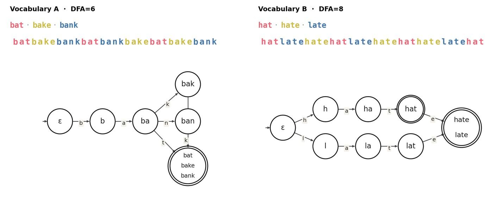
Two ≤3-word conditions. Vocabulary words (bold), one unsegmented stream, then the prefix-labeled minimal DFA (6 vs 8 states).
Fig 2 · Training the RNN
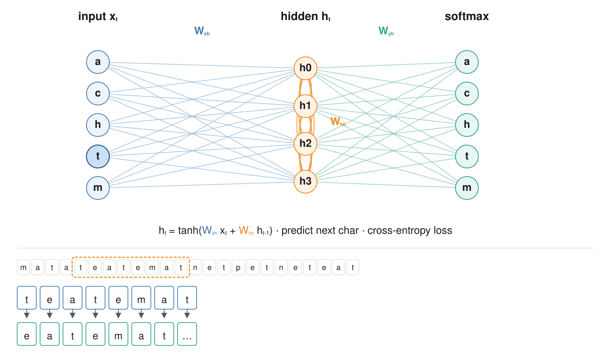
Character-level Elman RNN. Input $x_t$ predicts the next character via $h_t=\tanh(W_{xh}x_t+W_{hh}h_{t-1})$; cross-entropy loss.
Fig 3 · Learning & generation
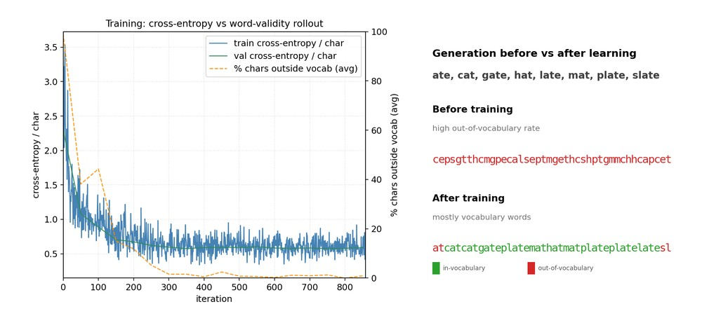
Loss and OOV collapse together; rollouts become legal vocabulary words. Demo lexicon listed above the panels.
Fig 4 · Next-character probabilities
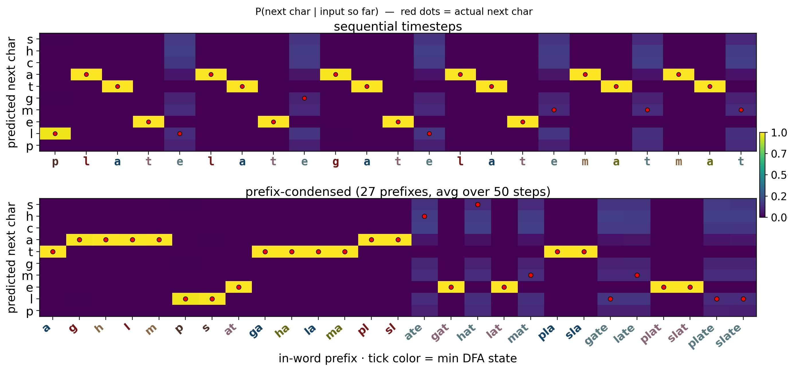
Softmax $P(\text{next char}\mid\text{input so far})$. Red dots = actual next character.
Fig 5 · Activation heatmap
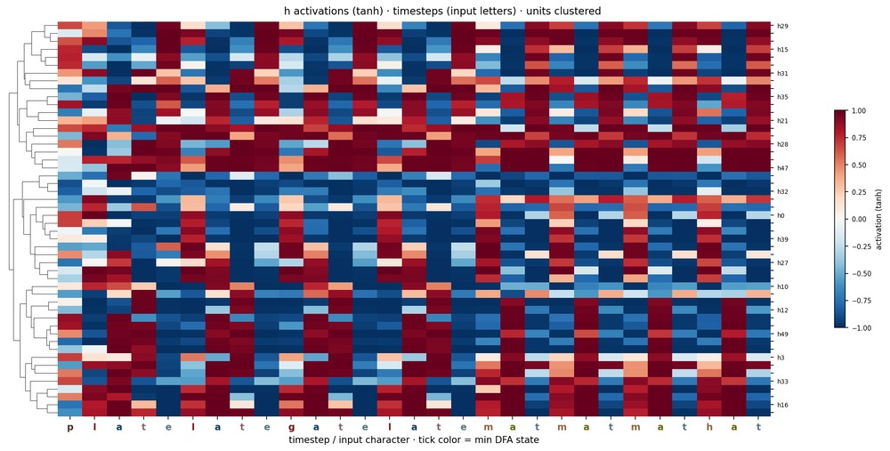
Hidden units over timesteps (input letters; units clustered).
Fig 6 · Activations by prefix
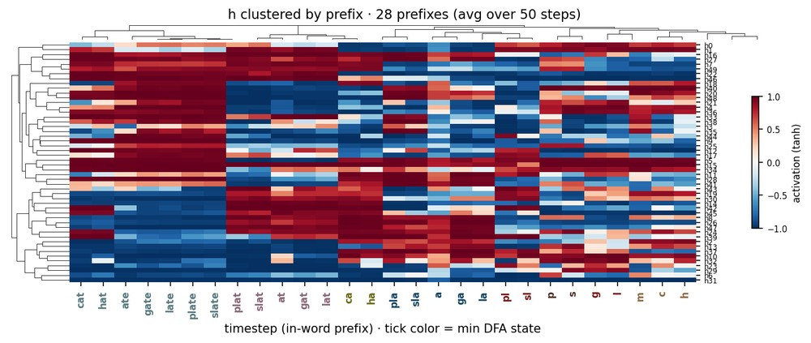
Activations clustered by in-word prefix. Tick color = DFA state.
Fig 7 · Hidden-state correlation
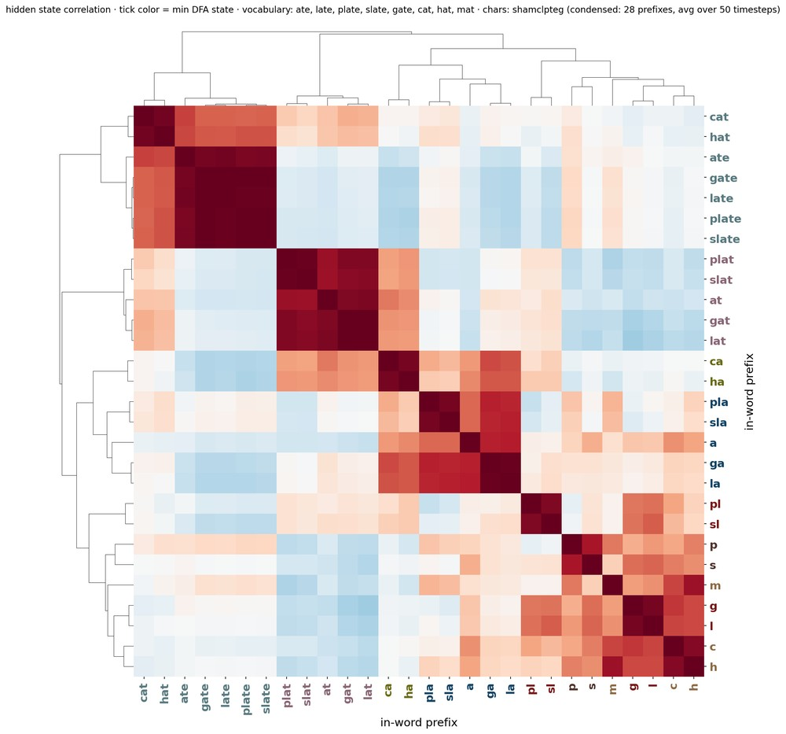
Prefix $\times$ prefix correlation. Blocks merge prefixes that share a future.
Fig 8 · DFA geometry & separation
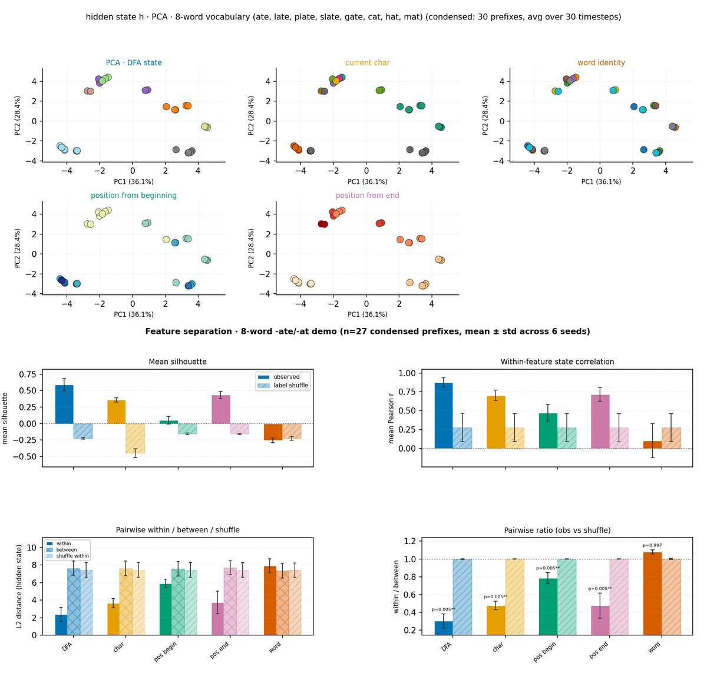
PCA of $\mathbf{h}$ by feature; pairwise within/between/shuffle at end of row. DFA $\eta^2 \approx 0.88$; word identity $\approx 0.06$.
Fig 9 · Example selective units
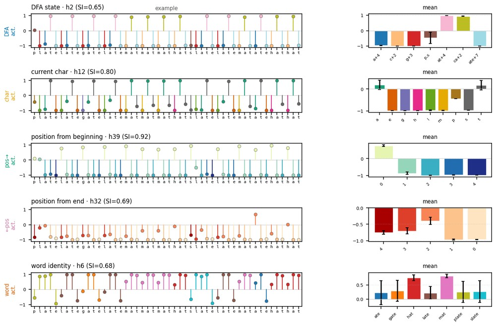
One top unit per feature on a shared corpus window.
Fig 10 · Linear decoding

Mean $\pm$ std, 6 seeds. DFA/character saturate in a few PCs; word identity needs many more. Middle-right: mean SI over training (seed 1; dashed = word err). Right: unit SI density (lines).
Fig 11 · Word trajectories
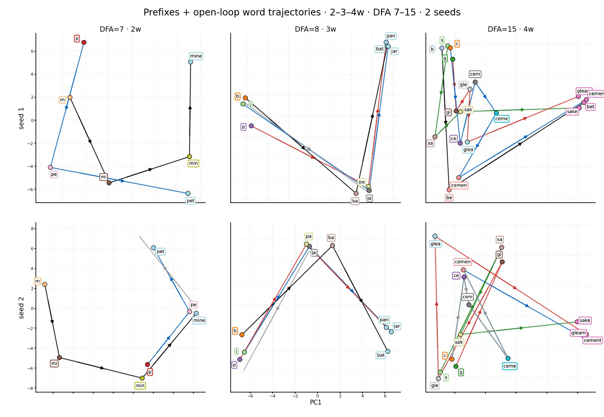
DFA-labeled prefixes with open-loop word trajectories overlaid (same PCA plane). Columns: 2–4 word mixed vocabs; rows: two seeds.
Fig 12 · Activations & scaling vs DFA size
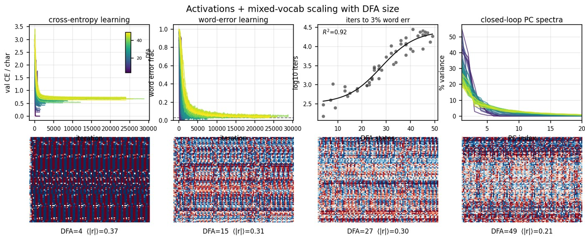
Top: four activation rasters spanning DFA size. Bottom: CE and word-error learning, iters to 3\% WE, and closed-loop PC spectra.
Fig 15 · Readouts vs DFA size
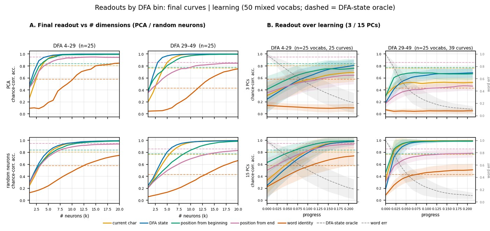
Two DFA bins. Left: final PCA/neuron readout. Right: readout over learning (3/15 PCs). Word identity needs $\sim$15 PCs.
Fig 16 · Geometry & unit selectivity
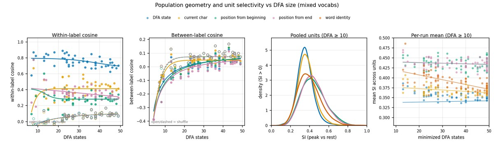
Within/between cosine similarity, plus per-unit SI vs DFA size.
Fig 18 · Weight matrices vs DFA
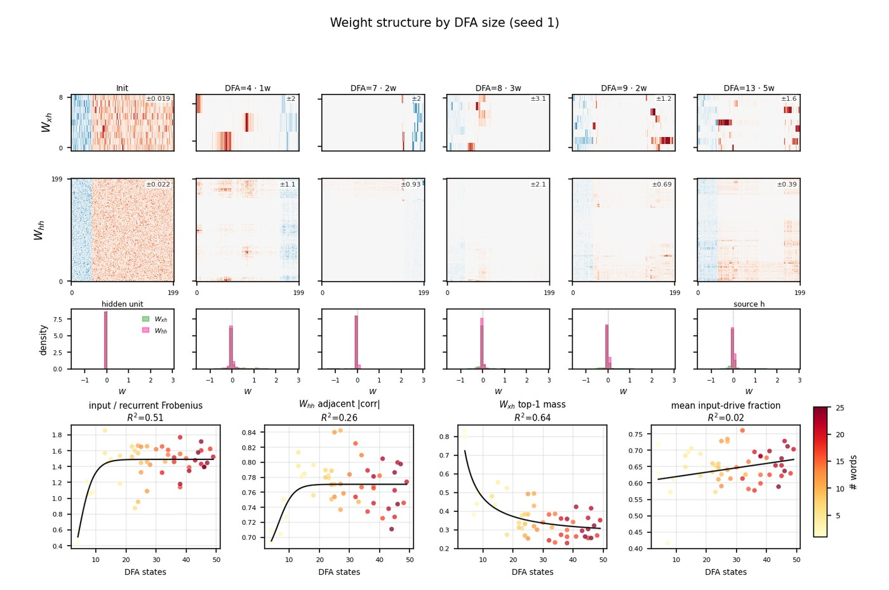
Init + DFA 8/9/13 matrices (shared symlog $w$ scale); bottom: $W_{xh}$ / $W_{hh}$ densities (color = DFA size).
Fig 19 · Weight graph motifs vs DFA
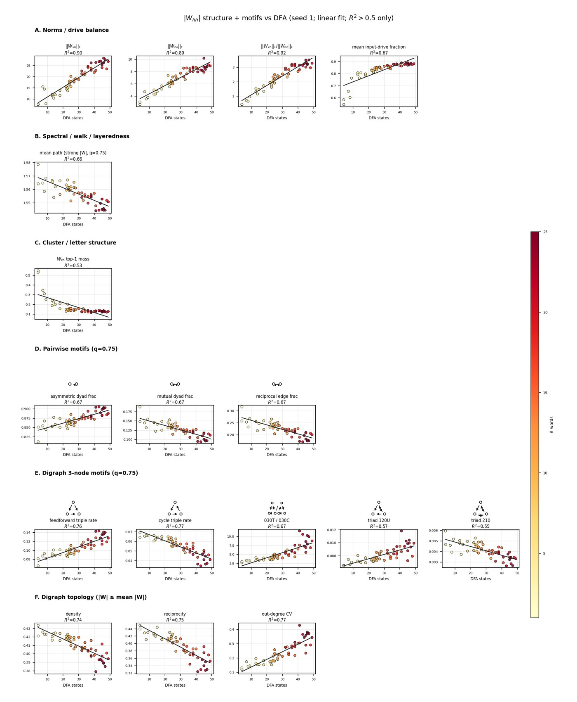
Norms, structure, pairwise and 3-node motifs. Larger DFAs shift feedforward.